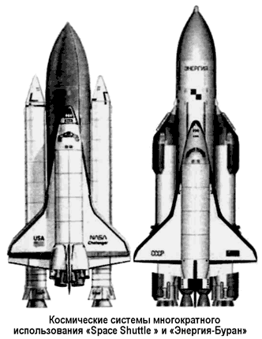
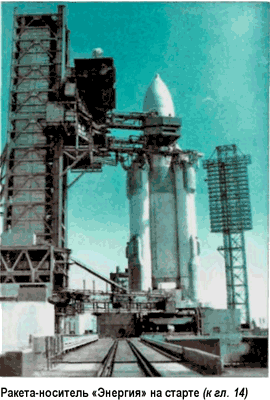
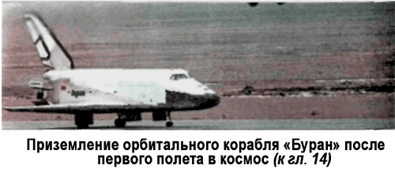

Причины закрытия программы «Буран»
После того как 17 мая 1987 года ТАСС оповестило мир о том, что в Советском Союзе начаты летно-конструкторские испытания новой мощной ракеты-носителя «Энергия», воспоследовала немедленная реакция со стороны западных СМИ.
«СССР теперь имеет возможность выполнять те космические задачи, которые останутся недоступными для США даже тогда, когда вновь начнутся полеты американских космических кораблей многоразового использования, — заявил в передаче телекомпании «Эй-Би-Си» сотрудник Университета Дж. Вашингтона доктор Джон Логсдон. — Для того чтобы приступить к выводу на орбиту таких же полезных грузов, на какие рассчитана советская ракета, Соединенным Штатам потребуется от шести до десяти лет».
«Советский космический эксперимент, — отмечала парижская «Юманите», — происходит в тот момент, когда США по прежнему не способны вернуть свои челночные космические аппараты на орбиту».
«Советский Союз вступил в новый этап освоения космического пространства», — утверждала японская «Майнити».
Примечательно, что при всеобщем одобрении действий советских конструкторов прозвучало предупреждение, озвученное газетой «Вашингтон Таймс»: ракета «Энергия» позволит Советскому Союзу создать систему орбитальных боевых станций, начиненных «лазерами, малыми ракетами, осколочными бомбами и спутниковыми боеголовками». Трех-четырех запусков новой ракеты хватит, чтобы создать действующую противоспутниковую систему на орбите.
Догадаться об истинном предназначении многоразового ракетно-космического комплекса было несложно, ведь сами американцы создавали систему «Спейс Шаттл» не из соображений гуманизма. Однако конструкторы НПО «Энергия» опоздали: новый руководитель государства Михаил Горбачев взял курс на «разрядку» и любые космические системы, имеющие военное назначение, оказались не нужны.
Собственно, Горбачев заявил об этом прямо еще во время своего визита на Байконур. Свидетельствует главный конструктор Борис Губанов:
«…Михаил Сергеевич остановился, ожидая, когда подойдет основная группа, и, глядя на «Буран» (композиция ракеты и корабля пока называлась одним именем), сказал: «Ну… видимо, кораблю мы навряд ли найдем применение… Но ракета, мне кажется, найдет свое место…» Молчание. Откровение вслух звучало, как приговор. Не думаю, что эти фразы родились у него лично и только что. Остальные «молчавшие» не возражали. Значит, они продолжали начатый не сейчас разговор. Для меня это было очередной новостью «из первых уст»…»
Тема областей применения комплекса «Энергия-Буран» обсуждалась и позднее — в июле 1987 года на Совете обороны под председательством Горбачева. Оказалось, что целевых грузов для него пока нет, а в свете сокращения военного бюджета страны и не предвидится.
Несмотря на это, НПО «Энергия» составила план дальнейших летно-конструкторских испытаний с выведением на орбиту грузов специализированного назначения. На начало 1989 года план выглядел следующим образом. 4-й квартал 1991 года — полет «Бурана-2К1» (второй корабль, первый полет) длительностью в двое суток с модулем дополнительных приборов «37КБ-37071». 1-й или 2-й кварталы 1992 года — полет «Бурана-2К2» длительностью 7–8 суток с модулем «37КБ-37271». 1993 год — полет «Бурана-1К2» длительностью 15–20 суток с модулем «37КБ-37270».
Эти четыре полета «Буранов» должны были стать беспилотными.
В полете корабля «2К2» планировалось отработать автоматическое сближение и стыковку с орбитальным комплексом «Мир». Начиная с пятого полета, планировалось использовать третий орбитальный корабль «ЗК», оборудованный системой жизнеобеспечения и двумя катапультируемыми креслами. Полеты с пятого по восьмой тоже считались испытательными, потому экипаж должен был состоять лишь из двух космонавтов. Они намечались на 1994–1995 годы. Для этих миссий НПО «Энергия» собиралось изготовить исследовательские модули по примеру американских «Спейслаб» («Spacelab») и («Спейсхаб») («Spacehab»), которые с помощью дистанционного манипулятора корабля пристыковывались бы к боковому стыковочному узлу модуля «Кристалл» орбитальной станции «Мир».
Реализация всей этой программы оценивалась в 5 миллиардов рублей в ценах 1989 года. И первоначально она была поддержана Советом обороны, поскольку меньшее финансирование привело бы к развалу комплекса.
Однако в том же 1989 году началась настоящая атака на всю космическую отрасль. Вот лишь несколько цитат из советских газет того времени:
«Комсомольская правда»: «Сколько стоит «Буран»? Отвечает председатель Государственной комиссии: «Разработка программы «Шаттл» оценивается в 10 миллиардов долларов, каждый запуск — примерно в 80 миллионов. Наши цифры по «Энергии» и «Бурану» соизмеримы с затратами американцев»».
«Правда»: «В некоторых письмах, приходящих в редакцию, читатели спрашивают, нужен ли нам такой дорогостоящий корабль, как «Буран»?..»
«Труд»: «Похоже, мы наконец всерьез начнем считать деньги.
Отказались от баснословных затрат по переброске рек, хотим, чтобы оборонная промышленность в большей мере работала для нужд народного хозяйства, сокращаем армию, вооружения. В этой связи не пора ли сократить ассигнования на освоение космоса?»
В самом деле, быстрой экономической отдачи от такой сложной и дорогой ракетно-космической системы, как «Энергия-Буран», ожидать не приходилось. По оценке специалистов, она начала бы окупаться не ранее чем в 1995 году, а приносить прибыль — к 2003 году. И это — в «тепличных» условиях бескризисной плановой экономики!
Понятно, что при том экономическом раскладе, который мы имели в последние годы правления Горбачева и при Борисе Ельцине, о сохранении и развитии нового ракетно-космического и «Энергия-Буран»
Никто и не думал. За политическими потрясениями начала 90-х годов о «Буране» забыли, а с развалом Советского Союза, когда многие из предприятий, работавших на космонавтику, включая космодром Байконур, оказались за границей, существование самой отрасли оказалось под угрозой.
В декабре 1991 года Государственный Совет упразднил Министерство общего машиностроения, отвечавшего за космонавтику.
Перед сообщением об этом было опубликовано интервью последнего министра, где он высказался за нецелесообразность существования такого грандиозного органа.
Система «Энергия-Буран» была переведена из Программы вооружений в Государственную космическую программу решения народно-хозяйственных задач. «Процесс пошел…»
Еще через год Российское космическое агентство приняло решение о прекращении работ по «Бурану» и консервации созданного задела. Это стало трагедией для всех сотрудников НПО «Энергия». Ведь к этому времени был полностью собран второй экземпляр орбитального корабля и завершалась сборка третьего корабля с улучшенными техническими характеристиками.

Выполняя межправительственное соглашение о стыковке корабля «Спейс Шаттл» со станцией «Мир» в июне 1995 года, наши инженеры использовали технические материалы по орбитальной стыковке корабля «Буран», что значительно сократило срок подготовки. Но вы легко можете представить себе, как обидно и горько было наблюдать разработчикам «Бурана», что с «Миром» стыкуется не наш корабль, а чужой «Шаттл»…

